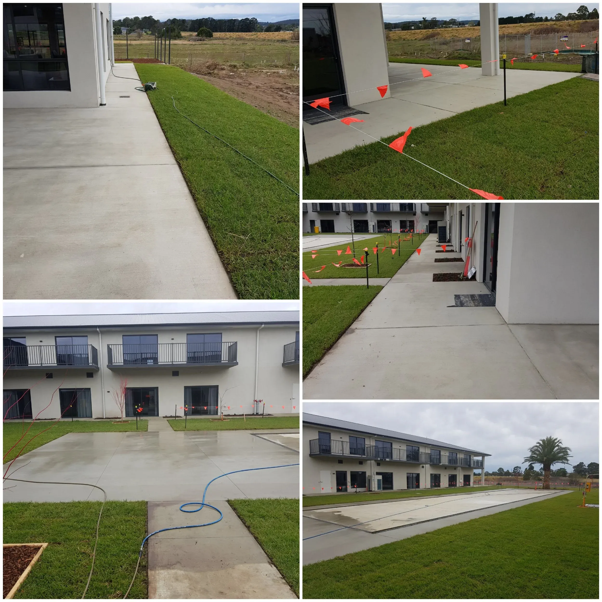

Repels stains & oil
A sealed surface stops oil, tyre marks and spills from soaking in — so your driveway stays cleaner for longer.
Protect and enhance your concrete with professional cleaning and sealing across Traralgon, Warragul and Gippsland. A long-lasting finish that resists stains, moss and weather while bringing the colour back to life.

Concrete sealing is one of the smartest ways to protect a driveway. SEPWS cleans and seals exposed aggregate, plain and coloured concrete across Traralgon, the Latrobe Valley and South-East Melbourne — locking out stains and lifting the finish.
We start with a deep clean to remove oil, moss and ingrained dirt, then apply a quality sealer that soaks in and protects. The result is a richer colour, an easier-to-clean surface and concrete that stands up to Gippsland's weather for years.

A small investment that pays off in protection, looks and easier maintenance.
A sealed surface stops oil, tyre marks and spills from soaking in — so your driveway stays cleaner for longer.
Sealing deepens and protects the colour of exposed aggregate and coloured concrete, giving a fresh, finished look.
Sealed concrete resists moss, mould and weed growth between aggregate, cutting down on maintenance.
We pressure wash the concrete to strip away oil, moss, lichen and ingrained grime.
The surface is left to fully dry and any repairs or spot-treatments are addressed.
A quality sealer is applied evenly, penetrating the concrete to protect and enrich it.
We allow proper curing time and inspect the finish so it's even, protected and ready to use.
Genuine concrete sealing jobs from across Gippsland & South-East Melbourne.
Proudly servicing 30+ suburbs from our Morwell base — including these popular areas.
Everything Traralgon and Latrobe Valley homeowners want to know.
Yes. Exposed aggregate is one of our most requested concrete sealing jobs. We clean and seal exposed aggregate, plain and coloured concrete across Traralgon, Warragul and the Latrobe Valley, protecting against stains, moss and weathering while enhancing the finish.
A quality seal typically lasts several years before it needs refreshing, depending on traffic, sun exposure and wear. We'll advise on the best re-seal interval for your specific driveway.
Sealing enriches and protects the colour, giving exposed aggregate and coloured concrete a fresh, finished appearance. We can discuss matte through to a higher-sheen finish to suit your preference.
For the best and longest-lasting result, concrete should be thoroughly cleaned before sealing. SEPWS handles both in one job, so your driveway is spotless and protected in a single visit.
We seal concrete across Traralgon, Morwell, Moe, Warragul, Drouin, Pakenham, Berwick and the wider Gippsland and South-East Melbourne region.
Get a fast, free quote anywhere across Gippsland & South-East Melbourne. No pressure, just a fair price and a great result.